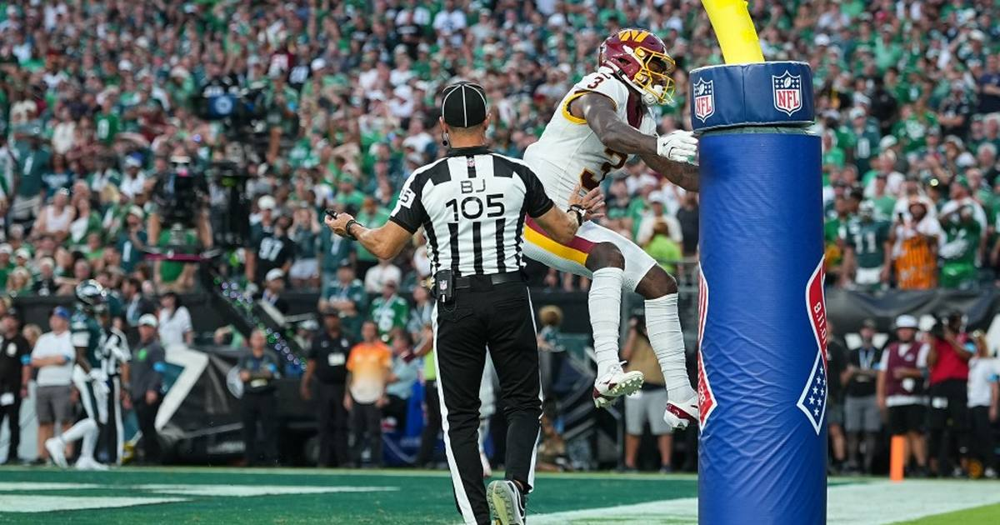

Daniels to Diggs with 57 seconds left — Commanders stun the Giants 24-21 on Thursday night
Jayden Daniels threw his first two interceptions of the season, then drove Washington 71 yards in 49 seconds and hit Stefon Diggs for a 32-yard touchdown with 57 seconds left. The Commanders beat the Giants 24-21 and kept their season alive.

Disclosure: this post contains affiliate links. I earn a commission on qualifying purchases.
The night
The Washington Commanders were dead. Then they were not. Jayden Daniels marched Washington 71 yards in 49 seconds after the two-minute warning and fired a 32-yard strike to Stefon Diggs with 57 seconds left, and the Commanders stunned the New York Giants 24-21 at MetLife Stadium on Thursday night to open Week 10.
It was a strange night for Daniels. He threw his first two interceptions of the season — on back-to-back possessions — and still finished 23-of-33 for 249 yards and three touchdowns. The second pick came with the game slipping away. The answer was the drive that followed: no panic, no checkdowns, just a 71-yard march and a throw to the one receiver who has made a career out of that exact moment. Diggs finished with six catches for 83 yards and the winner. Rasul Douglas picked off J.J. McCarthy at the Washington 11 with 25 seconds left to seal it.
The Giants had the game in their hands twice. Cam Skattebo ran for 78 yards and two touchdowns and added 44 receiving yards, and with 8:13 left, McCarthy found Isaiah Likely on a crossing route that turned into a 66-yard touchdown — Likely finished with nine catches for 127 yards — to put New York up 21-17. Before that, rookie Antonio Williams had answered a Giants score with a 31-yard catch-and-run of his own, and Ben Sinnott added a touchdown grab. New York outgained Washington 399 to 340, but missed a field goal and turned it over twice.
The stakes
The loss column is what matters now. Washington improves to 3-5-1 and is two games behind the NFC East-leading Giants at 5-3-1 — and the Commanders own the tiebreaker after winning the rematch of the Week 5 meeting that ended in a 27-27 overtime tie. Washington has now gone 5-0-1 in its last six meetings with New York.
For the Giants, it is a game they had the means to win, twice, and let slip away — the kind of loss that turns a comfortable division lead into a race. For Washington, a season that looked finished at kickoff is alive again, because its quarterback threw two picks and then played the last minute like none of it happened.
What's next
Washington gets the weekend to breathe before a Week 11 trip that will decide whether this was a rescue or a stay of execution. The Giants, still on top of the East, have to answer the same question from the other side: how a 21-17 lead with eight minutes left became a loss.
Gear up: Fanatics